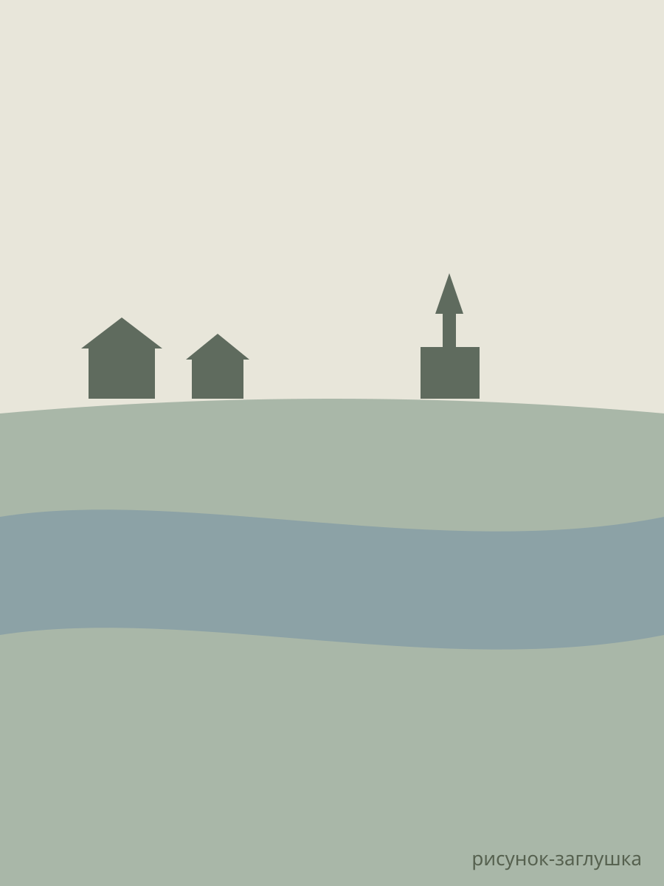

Ищет
Где работал Готлиб в 1942 году — списки трудармии.
Начато 10 ноябряДевочка из немецкого села на Волге в десять лет едет в товарном вагоне в казахстанскую степь. Через восемьдесят лет её внучка находит справку, где записано, откуда всё началось.
Продолжить · глава 3 из 6Готлиб, он же Богдан
Каждая — одна судьба, рассказанная по главам. Читаются вслух, по вечерам.
 Шмидты: Волга и степь1941–1957 · 6 глав
Шмидты: Волга и степь1941–1957 · 6 глав

Село у Волги1899–1941 · 4 главы Корнеевы из Павлодара1928–1990 · 5 главНажмите на имя — откроется человек в дереве.
Расследование идёт само; новые главы появляются, когда находится бумага.
Где работал Готлиб в 1942 году — списки трудармии.
Начато 10 ноябряГод свадьбы Эммы и Андрея: память семьи говорит 1956, свидетельство дочери — 1957.
Две бумаги, одна памятьСправку 1994 года с другим отчеством — из неё выросла глава «Готлиб, он же Богдан».
Глава 3